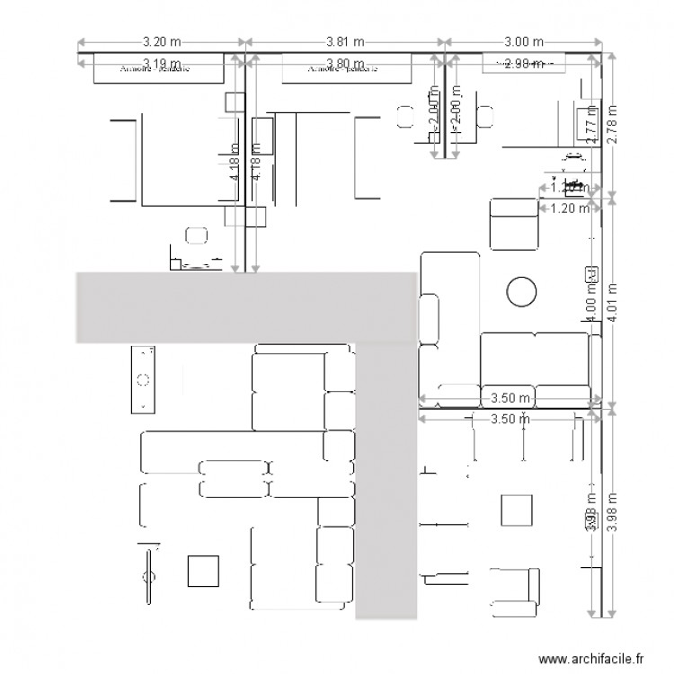

<!--
  Generated template for the CartePage page.

  See http://ionicframework.com/docs/components/#navigation for more info on
  Ionic pages and navigation.
-->
<ion-header>

  <ion-navbar color="primary">
    <ion-title>carte</ion-title>
  </ion-navbar>

</ion-header>


<ion-content padding>
	<div id="carte" style="width:100%; height:100%;">
		
	</div>
</ion-content>
